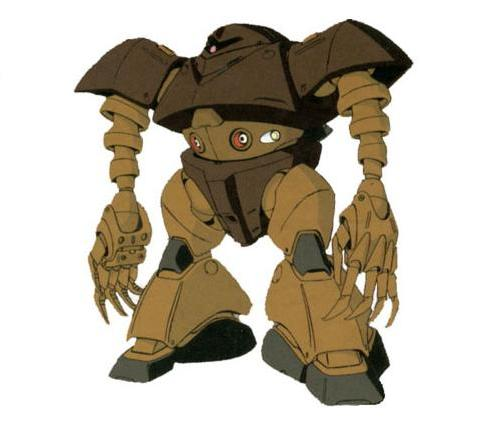

| MSM-03 Gogg Marine Combat Amphibious Zeon Duchy Mobile Suit |
|
|  | |
General and Technical Data |
|
|
Model number: MSM-03 Code name: Gogg Unit type: mass production amphibious mobile suit Operator: Zeon Duchy Dimensions: head height 18.3 meters Weight: empty 82.4 metric tons; max gross 159.4 metric tons Construction: super high-tensile steel Powerplant: Minovsky type ultracompact fusion reactor, output rated at 1740 kW Propulsion: hydrojet thrusters, 2 x 38000 kg, 3 x 15000; rocket thrusters, 2 x 26000 kg Performance: thruster acceleration 0.76 G; maximum water speed 75 knots; maximum ground running speed 68 km/h Equipment and design features: sensors, range 5400 meters Optional Fixed armaments: 2x heavy torpedo, mounted over back. Fixed armaments: 2 x mega particle cannon, fire-linked, mounted in main body; 2 x torpedo launcher, 2 rounds, mounted in main body; 10 x claw, sharpened melee weapon, 5 per arm Magnetic Storage Racks: 0 |
|
| Technical and Historical Notes | |
|
After the Earth Drop operations failure to capture the EF bases at Malta and Honolulu, an ambitious new project sprung up at California Base to convert the MS-06J Zaku II into a suitable marine combat mobile suit. The resulting prototype, the MS-06M (later reclassified as Mobile Suit Marine 01; MSM-01) was an astounding failure in every forseeable fashion. The Zaku's body, even after undergoing substantial modification, was just not hydrodynamic enough to be worthwhile, so an entirely new mobile suit design would have to be constructed. Zimmad, eager to smudge out their Zeonic rivals, spared some of their Dom researchers to crank out a mobile suit later to be called the MSM-03 Gogg.
The Gogg is an extremely portly mobile suit due to its stomach mounted weapons. Two heavy mega particle cannons give it some serious firepower, and a pair of torpedo launchers allow it to engage targets underwater at long range. Its long and highly flexible arms are also equipped with long, sharp claws with limited manipulator capability. Two anti-ship torpedos can also be mounted on the Goggs backpack.
The Gogg is outfitted with a large reactor to power its mega particle cannons. It is also heavily armored, both to withstand enemy fire as well as the crushing pressures exerted by the ocean and deep depths. However, the Gogg suffers from overheating problems as a result of its water-cooled reactor, and can only fight on land at full power for about twenty to thirty minutes before needing to shut down and cool off or get back in the water. Also, its belly-mounted weaponry isn't nearly as easy to aim as a normal, handheld gun, which has drawn some fire from Zeon's older mobile suit pilots as too much of a breach of continuity and tradition.
|
 RPG quick stats sheet
RPG quick stats sheet | Weapons and Features | |
|


Gogg/Z'Gok Cockpit |
|